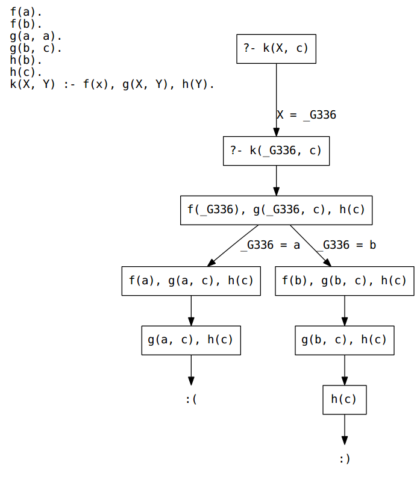

Midterm 1 guide
Answers on the bottom. Also, you can bring a notecard (5in x 7in max) with notes or whatnot.
TOC
Turing test
True or false? Turing first described a test between a monkey and a human before describing a test between a human and a machine.
True or false? The goal of the machine is to convince the judge that the human is a machine.
True or false? To pass the Turing test, the machine should be expected to fool the judge (convince the judge that the machine is a human) nearly 100% of the time; or, maybe just 70% of the time.
True or false? Dennett thinks that winning a chess championship is just as strong a test for computer intelligence as the Turing test.
Search
General search
Give an initial state, describe possible actions and the transition model (i.e., how states connect), and specify a goal criterion for the following search problem:
A robot wants a path to exit a maze. The maze is represented as a square grid; open areas are represented by white grid cells, and walls are represented by black grid cells.
Repeat this exercise for the following search problem:
Recall from calculus that the derivative is the inverse of the integral. Finding the derivative of a formula is easy (no search needed). But finding the integral of a formula is often challenging, and may require a search procedure. Describe this search procedure.
Complete the following table for weighted, finite search graphs:
| Search algorithm | Always complete? | Always optimal? | Uses a heuristic? |
|---|---|---|---|
| Random search | |||
| Breadth-first search | Yes | ||
| Depth-first search | No | ||
| Hill-climbing search | |||
| Best-first search | |||
| A* search | Yes |
Recall the Goodale route search problem from Practice with searching
notes. Answer the following questions for each of breadth-first
search, depth-first search, best-first search (using distances),
hill-climbing search, and A* search (using some heuristic like
distance “as the crow flies”). Assume we start at Woodruff & Tuttle
and the goal is Goodale parking lot. For each question, there may be
more than one correct answer.
- What are the first two states (beyond
Woodruff & Tuttle) that will be checked? - What does the
tochecklist look like after checking those states from question 1? Be sure to order the list by an appropriate sort order (breadth-first, hill-climbing, best-first, and A* will take the next state from the front of the list; depth-first will take the next state from the end).
True or false? Iterative deepening depth-first search is complete whenever regular depth-first search is complete for some search problem.
True or false? Iterative deepening depth-first search can usually be expected to find a shorter path to the goal than regular depth-first search.
What is the singular requirement for a heuristic to be called “admissible?”
Adversarial search
Describe a utility function for an adversarial search procedure (e.g., minimax) for playing chess.
True or false? Minimax is an appropriate search procedure for single-player games (like a solitaire card game or a Rubik’s cube)?
True or false? Alpha-beta pruning, as applied to the minimax procedure, produces more optimal solutions (e.g., produces game moves that allow the computer to win in fewer moves).
True or false? Alpha-beta pruning (applied to minimax) uses different utility functions than regular minimax.
True or false? Alpha-beta pruning (applied to minimax) is the same algorithm as minimax, just faster because irrelevant computations are omitted.
Knowledge representation
Boolean logic
Simplify the following expression using Boole’s and De Morgan’s laws: $$\neg(\neg x \vee \neg y) \wedge (x \wedge (y \vee \neg y))$$
Propositional logic
Build a truth-table for: $$\neg A \vee (B \leftrightarrow A)$$ Find a satisfying assignment (if any exists) for: $$\neg A \wedge (A \rightarrow (B \wedge C))$$ Given,
- \((S \vee T) \wedge (A \vee B)\)
- \(S \rightarrow Q\)
- \(\neg Q\)
- \(\neg C \vee Q\)
Prove (and state the rules and premises you utilize):
- \(\neg S\)
- \(T\)
- \(\neg C \vee W\)
First-order logic
Rewrite the following statements in first-order logic:
- Tony is a tiger.
- All tigers have stripes.
- Some tigers are white.
- If any tiger is white, then we know it lives in the snow (but not necessarily vice versa).
- A tiger is not both white and orange.
Rewrite the following without using \(\forall\) (hint: use negation): $$(\forall x)(P(x) \leftrightarrow (A(x) \wedge B(x)))$$ Rewrite the following without using \(\exists\): $$(\exists x)(W(x) \vee \neg Q(x))$$
Prolog
Given,
member(X, [X|_]). member(X, [_|Tail]) :- member(X, Tail). foobar(X, List) :- member(Y, List), X \= Y.
What are the values of each of these queries? (Write “true” or “false”, or give one value of the variable X.)
member(5, [1, 2, 3]). member(X, [1, 2, 3]). foobar(1, [1, 2, 3]). foobar(1, [1, 1, 1]).
Given,
family(10392, person(tom, fox, born(7, may, 1960), works(cnn, 152000)), person(ann, fox, born(19, april, 1961), works(nyu, 65000)), % here are the children... [person(pat, fox, born(5, october, 1983), unemployed), person(jim, fox, born(1, june, 1986), unemployed), person(amy, fox, born(17, december, 1990), unemployed)]). exists(Person) :- family(_, Person, _, _). exists(Person) :- family(_, _, Person, _). exists(Person) :- family(_, _, _, Children), member(Person, Children).
What are the values of each of these queries (write “true” or “false”, or give one value for each of the variables)?
family(_, person(_, _, born(_, _, Year), _), _, _), Year > 1960. % don't forget to give one value for each variable: % FirstName, LastName, and X exists(person(FirstName, LastName, _, X)), X \= unemployed.
Do the following unify, and if so, what are values for the variables (one set of values for each question), if any variables are involved, that make the unification work?
fooandfoofoo(X)andXfoo(foo(foo))andfoo(X)foo(X, foo)andfoo(foo, X)foo(X, foo)andfoo(Y)foo(foo(X, Y))andfoo(Z)
Suppose we have the following knowledge base:
f(a). f(b). g(a, a). g(b, c). h(b). h(c). k(X, Y) :- f(X), g(X, Y), h(Y).
Draw the resolution tree for the first successful proof of k(X, c).
Answers…
Turing test
True or false? Turing first described a test between a monkey and a human before describing a test between a human and a machine.
False — the original test was between a man and a woman; the man was supposed to impersonate the woman.
True or false? The goal of the machine is to convince the judge that the human is a machine.
True — or, False — my fault, both answers are true: the machine is supposed to convince the judge that it is a human, which is equivalent to convincing the judge that the human is a machine.
True or false? To pass the Turing test, the machine should be expected to fool the judge (convince the judge that the machine is a human) nearly 100% of the time; or, maybe just 70% of the time.
False — the machine should not be expected to be “more human than human,” so convincing the judge just 25% of the time seems sufficient. Over 50% may well change our definition of humanity…
True or false? Dennett thinks that winning a chess championship is just as strong a test for computer intelligence as the Turing test.
False — beating humans in chess is not sufficient because chess requires only a narrow kind of intelligence, more calculation than anything
Search
General search
Give an initial state, describe possible actions and the transition model (i.e., how states connect), and specify a goal criterion for the following search problem:
A robot wants a path to exit a maze. The maze is represented as a square grid; open areas are represented by white grid cells, and walls are represented by black grid cells.
- initial state: the robot’s starting location
- possible actions: move north, south, east, west (not all movements are always possible)
- transition model: look at the map, connect grid locations via north/south/east/west links
- goal criterion: finding the exit from the maze
Repeat this exercise for the following search problem:
Recall from calculus that the derivative is the inverse of the integral. Finding the derivative of a formula is easy (no search needed). But finding the integral of a formula is often challenging, and may require a search procedure. Describe this search procedure.
- initial state: the starting formula that needs a symbolic integral to be found
- possible actions / transition model: create a database like this:
sin(x) --> -cos(x)cx --> cx^2/2x^n --> (x^(n+1)/(n+1))- …
- goal criterion: say you are looking at a new formula
g, and the original formula isf, then you wantdg/dx = f; every “state” (formula) is checked in this way
Complete the following table for weighted, finite search graphs:
| Search algorithm | Always complete? | Always optimal? | Uses a heuristic? |
|---|---|---|---|
| Random search | Yes | No | No |
| Breadth-first search | Yes | No | No |
| Depth-first search | Yes | No | No |
| Hill-climbing search | No | No | Yes |
| Best-first search | Yes | No | Yes |
| A* search | Yes | Yes | Yes |
Recall the Goodale route search problem from Practice with searching
notes. Answer the following questions for each of breadth-first
search, depth-first search, best-first search (using distances),
hill-climbing search, and A* search (using some heuristic like
distance “as the crow flies”). Assume we start at Woodruff & Tuttle
and the goal is Goodale parking lot. For each question, there may be
more than one correct answer.
- What are the first two states (beyond
Woodruff & Tuttle) that will be checked?- breadth-first (one possible answer):
Lane & Tuttle,High & Woodruff - depth-first (one possible answer):
Lane & Tuttle,SR-315 & Lane - best-first (only answer):
High & Woodruff,High & 15th - hill-climbing (only answer): same as best-first
- A* (only answer):
Lane & Tuttle,High & Woodruff
- breadth-first (one possible answer):
- What does the
tochecklist look like after checking those states from question 1? Be sure to order the list by an appropriate sort order (breadth-first, hill-climbing, best-first, and A* will take the next state from the front of the list; depth-first will take the next state from the end). Assume already-checked states are not added.- breadth-first (one possible answer):
[SR-315 & Lane, High & 15th] - depth-first (one possible answer):
[High & Woodruff, SR-315 I-670 offramp, SR-315 & King] - best-first:
[High & 11th, US-23 & 15th, Lane & Tuttle] - hill-climbing:
[High & 11th, US-23 & 15th] - A*:
[High & 15th, SR-315 & Lane]
- breadth-first (one possible answer):
True or false? Iterative deepening depth-first (IDDFS) search is complete whenever regular depth-first search is complete for some search problem.
True — DFS is complete when the search space is not infinite. Since IDDFS performs repeated DFS (with greater depth limits), it too will be complete if DFS is.
True or false? Iterative deepening depth-first search can usually be expected to find a shorter path to the goal than regular depth-first search.
True — The purpose of IDDFS is to not get lost in deep searches by putting a limit on the DFS depth (which causes more breadth to be searched because it hits the depth limit).
What is the singular requirement for a heuristic to be called “admissible?”
- The heuristic must always underestimate (or exactly match) the true cost from the current state to the goal state.
Adversarial search
Describe a utility function for an adversarial search procedure (e.g., minimax) for playing chess.
- One possible answer: Number of captured pieces, maybe with a weight for each piece (so a queen will have a large weight, a pawn not so much)
True or false? Minimax is an appropriate search procedure for single-player games (like a solitaire card game or a Rubik’s cube)?
False — there is no adversary to simulate and minimize, thus no minimax
True or false? Alpha-beta pruning, as applied to the minimax procedure, produces more optimal solutions (e.g., produces game moves that allow the computer to win in fewer moves).
False — alpha-beta does not change the solutions.
True or false? Alpha-beta pruning (applied to minimax) uses different utility functions than regular minimax.
False — the utility functions are not changed, just which parts of the search space are actually searched.
True or false? Alpha-beta pruning (applied to minimax) is the same algorithm as minimax, just faster because irrelevant computations are omitted.
True — that’s all alpha-beta pruning is; it still does minimax.
Knowledge representation
Boolean logic
Simplify the following expression using Boole’s and De Morgan’s laws: $$\neg(\neg x \vee \neg y) \wedge (x \wedge (y \vee \neg y))$$
- Change \(y \vee \neg y\) to \(T\), yielding: \(\neg(\neg x \vee \neg y) \wedge (x \wedge T)\)
- Change \(x \wedge T\) to \(x\), yielding: \(\neg(\neg x \vee \neg y) \wedge x\)
- Distribute the negative, yielding: \((x \wedge y) \wedge x\)
- Get rid of parentheses, reduce redundancy, yielding \(x \wedge y\)
Propositional logic
Build a truth-table for: $$\neg A \vee (B \leftrightarrow A)$$
| \(A\) | \(B\) | \(B \leftrightarrow A\) | \(\neg A \vee (B \leftrightarrow A)\) |
|---|---|---|---|
| T | T | T | T |
| T | F | F | F |
| F | T | F | T |
| F | F | T | T |
Find a satisfying assignment (if any exists) for: $$\neg A \wedge (A \rightarrow (B \wedge C))$$ Build a truth table to find this:
| \(A\) | \(B\) | \(C\) | \(B \wedge C\) | \(A \rightarrow (B \wedge C)\) | \(\neg A \wedge (A \rightarrow (B \wedge C))\) |
|---|---|---|---|---|---|
| T | T | T | T | T | F |
| T | T | F | F | F | F |
| T | F | T | F | F | F |
| T | F | F | F | F | F |
| F | T | T | T | T | T |
| F | T | F | F | T | T |
| F | F | T | F | T | T |
| F | F | F | F | T | T |
The last four rows will provide satisfying assignments.
Given,
- \((S \vee T) \wedge (A \vee B)\)
- \(S \rightarrow Q\)
- \(\neg Q\)
- \(\neg C \vee Q\)
Prove (and state the rules and premises you utilize):
- \(\neg S\)
- From 2, 3 and modus tollens.
- \(T\)
- From \(\neg S\) (above) and 1, simplification, and disjunctive syllogism.
- \(\neg C \vee W\)
- From 3, 4 and disjunctive syllogism (which gives us \(\neg C\)); now apply addition plus introduce the arbitrary symbol \(W\) (which is allowed with the addition rule)
First-order logic
Rewrite the following statements in first-order logic:
- Tony is a tiger.
- \(Tiger(Tony)\)
- All tigers have stripes.
- \((\forall x)(Tiger(x) \rightarrow Striped(x))\)
- Some tigers are white.
- \((\exists x)(Tiger(x) \wedge White(x))\)
- If any tiger is white, then we know it lives in the snow (but not
necessarily vice versa).
- \((\forall x)((Tiger(x) \wedge White(x)) \rightarrow LivesInSnow(x))\)
- A tiger is not both white and orange.
- \((\forall x)(Tiger(x) \rightarrow (\neg White(x) \vee \neg Orange(x)))\)
Rewrite the following without using \(\forall\) (hint: use negation): $$(\forall x)(P(x) \leftrightarrow (A(x) \wedge B(x)))$$ $$\neg(\exists x)((P(x) \vee (A(x) \wedge B(x))) \wedge (\neg P(x) \vee \neg(A(x) \wedge B(x))))$$ Rewrite the following without using \(\exists\): $$(\exists x)(W(x) \vee \neg Q(x))$$ $$\neg (\forall x)(\neg W(x) \wedge Q(x))$$
Prolog
Given,
member(X, [X|_]). member(X, [_|Tail]) :- member(X, Tail). foobar(X, List) :- member(Y, List), X \= Y.
What are the values of each of these queries? (Write “true” or “false”, or give one value of the variable X.)
member(5, [1, 2, 3]). % --> false member(X, [1, 2, 3]). % --> X = 1 or 2 or 3 foobar(1, [1, 2, 3]). % --> true foobar(1, [1, 1, 1]). % --> false
Given,
family(10392, person(tom, fox, born(7, may, 1960), works(cnn, 152000)), person(ann, fox, born(19, april, 1961), works(nyu, 65000)), % here are the children... [person(pat, fox, born(5, october, 1983), unemployed), person(jim, fox, born(1, june, 1986), unemployed), person(amy, fox, born(17, december, 1990), unemployed)]). exists(Person) :- family(_, Person, _, _). exists(Person) :- family(_, _, Person, _). exists(Person) :- family(_, _, _, Children), member(Person, Children).
What are the values of each of these queries (write “true” or “false”, or give one value for each of the variables)?
family(_, person(_, _, born(_, _, Year), _), _, _), Year > 1960. % answer: false
% don't forget to give one value for each variable: % FirstName, LastName, and X exists(person(FirstName, LastName, _, X)), X \= unemployed. % one answer: FirstName = tom, LastName = fox, X = works(cnn, 152000)
Do the following unify, and if so, what are values for the variables (one set of values for each question), if any variables are involved, that make the unification work?
fooandfoo- Yes, they unify (trivially).
foo(X)andX- No. There is no value of
Xsuch thatX = foo(X).
- No. There is no value of
foo(foo(foo))andfoo(X)- Yes, with
X = foo(foo).
- Yes, with
foo(X, foo)andfoo(foo, X)- Yes, with
X = foo.
- Yes, with
foo(X, foo)andfoo(Y)- No, arities differ.
foo(foo(X, Y))andfoo(Z)- Yes, with
Z = foo(X, Y).
- Yes, with
Suppose we have the following knowledge base:
f(a). f(b). g(a, a). g(b, c). h(b). h(c). k(X, Y) :- f(X), g(X, Y), h(Y).
Draw the resolution tree for the first successful proof of k(X, c).
